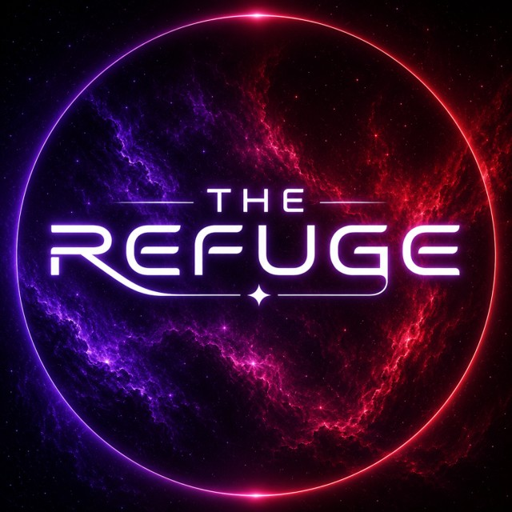

VESSEL STATUS: OPEN FOR BOARDING

A drifting fleet of talk shows, tournaments, and community events — and one enormous ship that a few hundred people have decided to call home.
SHIP'S LOG · WELCOME ABOARD
Everyone's got a bunk on this ship.
The Refuge was built with one mission in mind: to become a home for Discord events. From talk shows and game nights to live shows, tournaments, watch parties, and community traditions, our earliest days were shaped by the idea that there should always be something happening somewhere aboard the Ark.
But somewhere along the voyage, something bigger happened. People stopped showing up only for the next event and started showing up for each other. What began as a vessel centered around shared experiences grew into a community people log into every day because their friends are here, their routines are here, and this ship feels a little bit like home.
Today, that foundation still shapes life aboard The Refuge. Events give the Ark its momentum, but the community is what keeps it moving. Between scheduled experiences, spontaneous conversations, familiar faces, and the traditions that have formed along the way, The Refuge has become more than a place to attend something; it's a place to belong.
Jump aboard a transport ship to the Refuge today — your bunk is waiting!
Take the full tour of the Refuge Ark below.
THE GRAND TOUR
Explore the Ark.
Every deck of the Refuge, one click away.
Ship Directory
What happens aboard and where to find it.
02Ship Regulations
The rules everyone aboard lives by.
03Staff & History
Meet the crew and how the Ark came to be.
04Comms Log
Every update, straight from the bridge.
05Staff Applications
Help run the ship. See the open roles.
06Donations
Ways to support the Refuge.
07Social Media
Find the Refuge beyond Discord.
The Ark is always taking on new crew.
Talk shows, tournaments, and a lot of people who show up anyway. Come see for yourself.
Join The Refuge